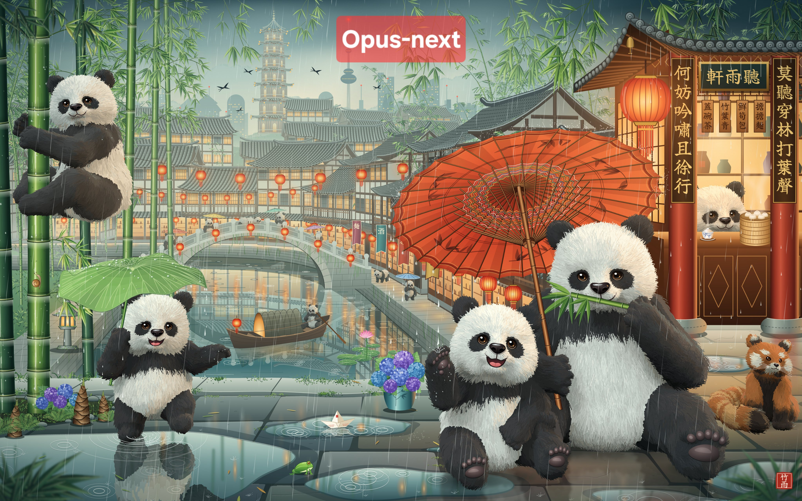
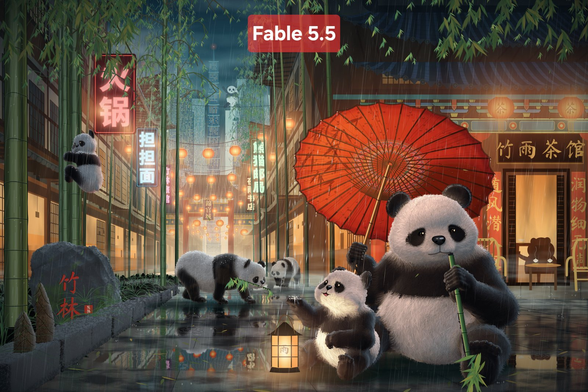

테스트 중인 클로드 차기모델로 생성한 SVG 벡터 이미지
코드로 그린거 맞음


테스트 중인 클로드 차기모델로 생성한 SVG 벡터 이미지
코드로 그린거 맞음
뒤에 권총자살하는 그림자는 뭐냐 ㅋㅋ
거기다가 울고있음
심지어 유두에서 연기도남
먼작귀네
Zzzzz
뭔소린가 했네 ㅋㅋㅋㅋㅋㅋ
아니 SVG로 이 질감이 된다고?
근데 이미지도 어차피 01010101 정보들인건데 못그리는 이유는 뭘까?
LLM이다 보니 출력이 자연어임 ㅋㅋ 1024 × 768 해상도의 무압축 비트맵 크기는 가장 일반적인 24비트(트루컬러) 기준 2,359,296 바이트(약 2.25 MB)고 일반 영문 알파벳 2,359,296글자, a4 기준 900장가량, llm토큰기준 60만토큰, 걍 비효율적이라 그래. 할려면 할 순 있는데 걍 이미지 생성모델을 따로 학습하는게 싸게 먹히지
그럼 llm이 본인들 이미지 생성모델 따로 호출하면 안대나?
ㅇㅇ gpt나 gemini는 그래서 자사 생성모델 뒷단에서 호출함, 클로드는 "이미지 생성 모델? 걍 슬롭이다" 라는 태도라 안만드는거
아하
근데 지피티나 잼미니도 A이미지에서 옷만 B로 바꿔줘 하면 이미지 자체가 변하는일이 많던데, 어려운일인가보네
llm이 프롬프트만 넘기고 A이미지를 안넘길수도 있고, 이미지 생성 모델이 A이미지를 입력으로 못받는 모델일 수도 있고 나도 자세히는 모르겠다 ㅎㅎ
아직 짤쟁이들을 써야겟구만
일단 저건 이미지가 아니라 벡터 도형들이라고 생각하면 됨.
원래 질문으로 돌아와서 왜 이미지를 못그리냐는 질문에는 두 가지 이유 정도가 있음.
첫 번째로 AI 회사들은 이미지를 그렇게 중요하게 생각하지 않음.
AI 회사들이 현재 하는 일반적인 생각은 이 흐름임:
`지능 자체를 해결한다 --> 모든게 해결된다`
이미지 조금 더 좋게 만들어봤자 지능이 올라가는건 아님.
그리고 지능 체급이 올라가면 알아서 이미지는 더 잘 만들기도 함.
두 번째 이유로 이미지는 단어보다 애매하기 때문임.
아무리 긴 문서라도 단어로 이루어져있고, 이 단어들은 특정한 뜻을 가지고 있음.
LLM 기준 글에서는 단어가 단위고, 그림은 네모 모양으로 조각낸 그림이 단위임.
네모 모양 요소라는게 잘 안와닿으면 거대한 그림을 이루고 있는 타일들 생각하면 됨.
단어는 그냥 딱 봐도 생각할 거리가 적음. 근데 타일을 보셈.
이 타일의 그림이 손가락일까 발가락일까 오징어 촉수일까 그림 속 그림의 일부일까.
이 모호함을 극복하고 좋은 퀄리티의 그림을 위해서는 그만큼 품이 들어가고, 돈이 들어가야 함.
근데 첫 번째 이유 때문에 거기에 투자를 안함. 글에서 쇠맛 나는 것도 마찬가지라고 보면 됨.
능력은 있지만, 자원을 투입할 요인이 적은거지.
음. 정확하겐 이미지 생성 모델이 갖는 본질적인 한계가 있어서 그렇긴 함. 그리고 이 부분에서 짤쟁이들이 살아남을 부분도 있긴하고.
AI가 이미지 만드는 방식이 여러가지기는 한데 확산모델이 원래는 많이 쓰였음. 확산은 노이즈를 걷어내는 방식으로 만드는 거.
AI가 그림을 그릴땐 우선 티비가 지지직 거리는 화면처럼 노이즈를 두고 이걸 계속 우리가 얘기한 조건에 맞춰서 걷어내면서 그림을 만들어가는거.
가령 강아지를 그려봐 하면 처음엔 노이즈 덩이를 보고 이렇게 하면 더 강아지에 가까워지도록 한 번 걷어내고 이제 좀 더 강아지 다워지면 다시 이걸 반복해서 노이즈를 걷어내면서 강아지형태에맞는 그림을 주는 형태인거
그래서 상용 llm은 그림 모델도 학습을 많이 했고 들어오는 명령도 판단도 로컬보다 뛰어나서 잘만드는거.
그리고 다른 하나는 gpt가 하는 것처럼 자기회귀로 만드는거. 이거는 퍼즐맞추기임. 가령 이 픽셀 뒤엔 이 픽셀이 와야 주문자의 요구에 더 적합하겠지를 반복하는거.
근데 이 두 방법 모두 본질적으로 통계에 따라서 그리는 거고 '그럴듯하게 그리는거'임 의도를 갖고 그리는게 아니라 무난하게 그려주는 거. 그러다보니까 굉장히 독특한 형태의 그림은 잘 못그림. 가령 엥글을 과도하게 꺽어서 과장되게 주면서 동일성을 유지하는거 이런건 잘 못함. 그거 하려면 손으로 그리는 만큼 노력이 들어감. 사람이 미세하게 하나씩 조정해줘야해서
지금 이걸 극복하려고 나오는게 월드 모델인데 ai에게 세계가 어떻게 움직이는지를 학습시켜서 다양한 각도와 동일성을 보게하는거고 이건 아직도 많이 연구되고 있음.
다만 그렇다고 해도 본질적인 통계의존이라 특유의 평평한 느낌이 드는건 어쩔 수 없음. 하지만 그것도 극복되긴 할 듯.
벡터로 이정도 한다고? 미친
아니 사람이 벡터로 이렇게 깎으려면 몇달은 걸릴거같은데 미쳤네
진지하게 저 이미지는 사람이 한다고하면 몇달까지는 아니고 며칠정도..
벡터파일로 저렇게 촘촘하게 그린거면 용량 엄청크겟지?
잘 모르는 개붕이 위해 설명하면 png는 각 픽셀 위치 별로 RGB 값을 저장함 (255,255,255) 이런식으로.
그런데 svg는 특정 좌표부터 다른 좌표까지 직선을 그으라는 수식을 저장함. y=0.5x+3 이런식으로.
그래서 저 위의 이미지는 수많은 수식으로 색깔 선들을 무수하게 많이 그려서, 만든 이미지임 ㄷㄷ

이게 왜 본문에 없는 거냐
대충 어도비 일러스트로 하나하나 그린거인겨?
그거랑같음
ㅇㅇ
그리고 TMI이긴 한데 png는 점 기반이라서 확대하면 도트 보이는데, svg는 벡터 기반이라서 1만배 확대해도 도트 안보임
벡터 이미지라고?
논문용 Svg 딱대라ㅋㅋㅋㅋㅋ
벡터라고 미쳤나 진짜 와
ai로 누덕누덕 만든다면야 불가능할건 없지
쌈마이느낌나고 좋네 ㅋㅋ